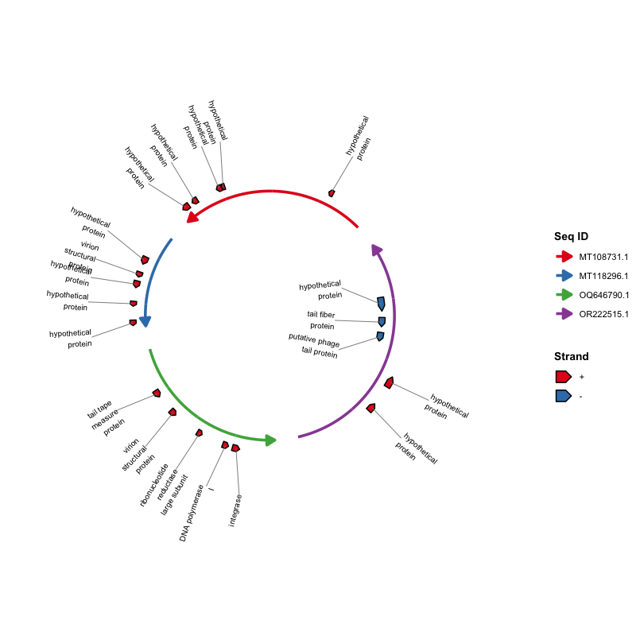
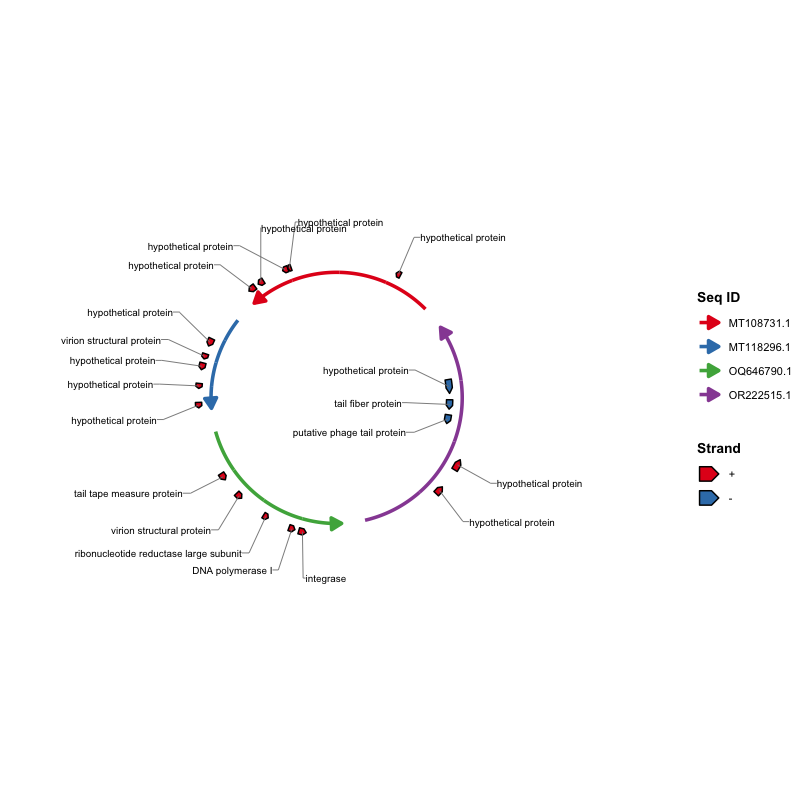
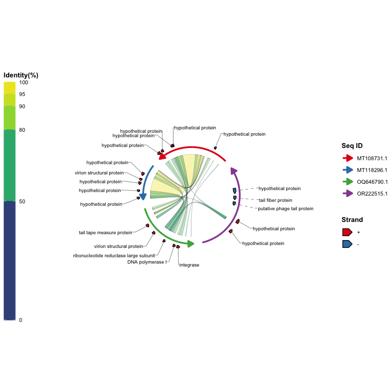
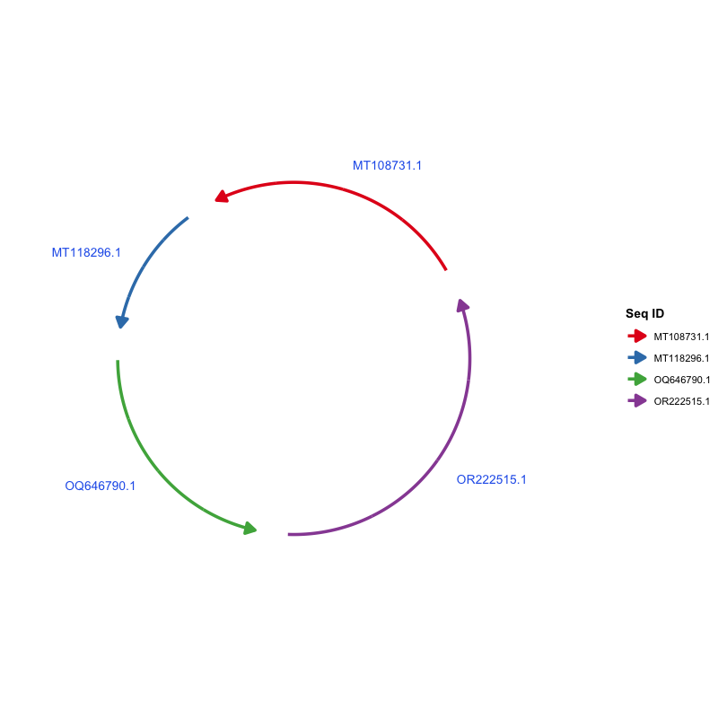
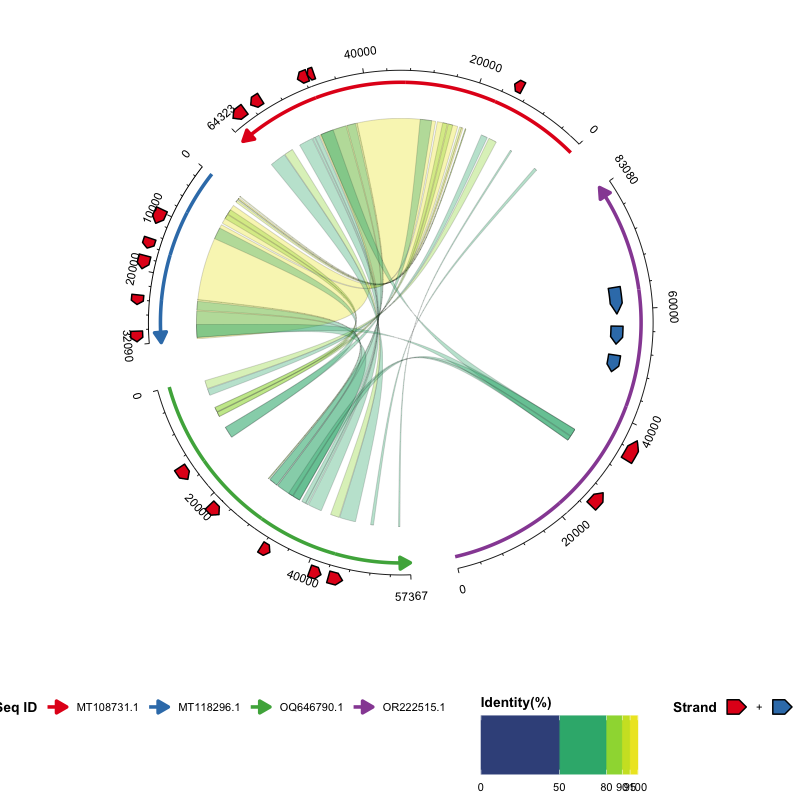

ggchord：基于 ggplot2 的多序列弦图可视化工具
Source:README-Hans.md
🌐 语言切换：【现代汉语（Hans） | English】
概述
ggchord 是一个基于 ggplot2 的 R 语言包，采用分层的图形语法将多序列数据绘制为直观的弦图。与”一个大函数”不同，你通过叠加图层来构建图形：ggchord() 负责提供数据与全局选项，每个 geom_* 图层负责绘制一类元素（序列弧线、比对连接带、基因注释、坐标轴、标签）。每个图层都有合理的默认值，因此一行代码即可画出完整的弦图，需要精细控制时也可以分别微调每个图层。
- 每条序列以圆弧呈现，长度按比例映射。
- 连接带（ribbon）表示序列之间的比对/同源区域。
- 基因（或其他特征）以箭头多边形绘制在序列弧上。
- 坐标轴与标签标注序列位置。
- 由于 ggchord 图形是真正的
ggplot2对象，theme()、scale_*()、ggsave()、ggplot_build()与plotly::ggplotly()均可直接使用。
该包是通用的多序列比较工具，可用于序列比较、基因邻域分析、噬菌体-宿主关系、泛基因组区块、共线性分析等——你只需要准备三张规整的数据表。
主要功能
-
真正的
ggplot2分层风格：ggchord()只接收数据和全局选项，每个geom_*图层管理自己的布局参数。 -
开箱即用：
ggchord(data) + geom_seq() + geom_ribbon() + geom_gene() + geom_axis()即可得到完整图形。 - 多序列支持：可同时展示两条、三条、四条或更多序列。
-
逐序列参数：顺序、方向、间距、半径、曲率等均在
geom_seq()中设置；支持单值、向量、命名向量与列表等多种格式（见灵活的参数格式）。 - 灵活的连接带：可按相似度、查询序列、目标序列或单一颜色着色；支持自定义贝塞尔曲率与描边。
-
基因注释：按链方向或功能类别着色，并可通过
geom_gene_label_repel()实现防重叠标签。 -
精细的坐标轴：主/次刻度，标签文字支持
"parallel"（平行于坐标轴）、"perpendicular"（垂直于坐标轴）、"horizontal"（水平）或任意角度。 -
与 ggplot2 生态无缝衔接：
theme()、scale_*()、ggsave()、ggplot_build()、plotly::ggplotly()均可使用。
安装
ggchord 需要 R（≥ 4.1.0）和 ggplot2（≥ 4.0.0）。
install.packages("ggplot2") # 如需要从 CRAN 安装：
install.packages("ggchord")从 GitHub 安装（开发版）：
devtools::install_github("DangJem/ggchord")快速开始
包内自带三份示例数据，直接运行以下代码即可：
library(ggchord)
# 加载内置示例数据
data(seq_data_example)
data(ribbon_data_example)
data(gene_data_example)
# 像 ggplot2 一样叠加图层
p <- ggchord(
seq_data = seq_data_example,
ribbon_data = ribbon_data_example,
gene_data = gene_data_example
) +
geom_seq() + # 序列弧线
geom_ribbon() + # 比对连接带
geom_gene() + # 基因注释
geom_axis() # 位置坐标轴
print(p)
核心思想就一句话：数据交给 ggchord()，样式交给各图层。下表概括了每个图层的作用，下一节会逐一演示。
| 图层 | 作用 |
|---|---|
geom_seq() |
绘制序列弧线（含方向箭头） |
geom_ribbon() |
绘制序列之间的连接带 |
geom_gene() |
绘制基因/特征箭头多边形 |
geom_gene_label() / geom_gene_label_repel()
|
绘制基因标签（固定位置或力导向防重叠） |
geom_axis() |
绘制坐标轴线、刻度与刻度标签 |
geom_seq_label() |
在弧线内侧/外侧放置序列名称 |
使用说明
1. 前期数据准备
包需要三类输入数据，均为普通数据框。
【必须】序列信息数据（seq_data）
| 列名 | 类型 | 说明 |
|---|---|---|
seq_id |
字符 | 序列唯一标识 |
length |
整数 | 序列长度（必须为正数） |
示例：
| seq_id | length |
|---|---|
| MT108731.1 | 64323 |
| MT118296.1 | 32090 |
| OQ646790.1 | 57367 |
| OR222515.1 | 83080 |
从 FASTA 文件生成该表格的常见方法：
【可选】比对数据（ribbon_data）
每行表示两条序列之间的一个比对片段（列名遵循常见比对工具的输出约定）：
| 列名 | 类型 | 说明 |
|---|---|---|
qaccver |
字符 | 查询序列 ID |
saccver |
字符 | 目标序列 ID |
length |
整数 | 比对长度（bp） |
pident |
数值 | 相似度百分比（0–100） |
qstart |
整数 | 查询序列上的起始位置 |
qend |
整数 | 查询序列上的终止位置 |
sstart |
整数 | 目标序列上的起始位置 |
send |
整数 | 目标序列上的终止位置 |
示例行：
| qaccver | saccver | length | pident | qstart | qend | sstart | send |
|---|---|---|---|---|---|---|---|
| MT108731.1 | MT118296.1 | 24856 | 98.612 | 26298 | 51139 | 7121 | 31959 |
| MT108731.1 | MT118296.1 | 4412 | 97.031 | 21513 | 25922 | 2365 | 6772 |
| MT108731.1 | MT118296.1 | 464 | 94.181 | 20691 | 21146 | 1032 | 1495 |
例如，BLAST 的 -outfmt 7 标准输出可以直接解析为该表格：
seqs=("MT108731.1" "MT118296.1" "OQ646790.1" "OR222515.1")
ext="fna"
for ((i=0; i<${#seqs[@]}-1; i++)); do
for ((j=i+1; j<${#seqs[@]}; j++)); do
blastn \
-outfmt '7 qaccver saccver pident length mismatch gapopen qstart qend sstart send evalue bitscore qcovs qlen slen sstrand stitle' \
-query "${seqs[$i]}.${ext}" \
-subject "${seqs[$j]}.${ext}" \
-out "${seqs[$i]}__${seqs[$j]}.o7"
done
done【可选】基因数据（gene_data）
每行表示一条序列上的一个基因（或其他特征）：
| 列名 | 类型 | 说明 |
|---|---|---|
seq_id |
字符 | 基因所属序列 ID |
start |
整数 | 基因起始位置 |
end |
整数 | 基因终止位置 |
strand |
字符 | 链方向（+ 或 -） |
anno |
字符 | 基因注释 / 功能类别 |
示例行：
| seq_id | start | end | strand | anno |
|---|---|---|---|---|
| MT108731.1 | 60709 | 63087 | + | hypothetical protein |
| MT118296.1 | 14628 | 16301 | + | virion structural protein |
| OQ646790.1 | 43765 | 46140 | + | integrase |
| OQ646790.1 | 13194 | 15551 | + | tail tape measure protein |
例如，可由 GFF3 文件转换得到：
library(tidyverse)
gff3FilesPath <- list.files(path = ".", pattern = "*.gff3")
gff3Table <- map_df(gff3FilesPath, ~read_tsv(.x, show_col_types = F, comment = "#",
col_names = F) %>% set_names(c("seq_id", "source", "type", "start", "end",
"score", "strand", "phase", "attributes")))
geneTrackTable <- gff3Table %>%
filter(type == "CDS") %>%
mutate(anno = str_extract(attributes, "(?<=product=)[^;]+(?=;)")) %>%
select(seq_id, start, end, strand, anno)
write_tsv(geneTrackTable, "gene_track.tsv")2. 由浅入深示例
以下示例均使用内置数据，可以直接复制运行：
第 1 步：绘制序列弧线
最简单的图形只需要 seq_data：

自定义序列布局——顺序、方向、曲率与颜色都属于 geom_seq()：
ggchord(seq_data = seq_data_example) +
geom_seq(
seq_order = c("MT118296.1", "OR222515.1", "MT108731.1", "OQ646790.1"),
seq_orientation = c(1, -1, 1, -1),
seq_curvature = c(0, 2, -2, 6),
seq_colors = c("steelblue", "orange", "pink", "yellow")
)
第 2 步：加入比对连接带
添加 ribbon_data 并绘制连接带。默认按相似度百分比着色（ribbon_color_scheme = "pident"）：
ggchord(seq_data_example, ribbon_data_example) +
geom_seq() + geom_ribbon()
其他配色方案：
# 按查询序列着色
ggchord(seq_data_example, ribbon_data_example) +
geom_seq() + geom_ribbon(ribbon_color_scheme = "query")
# 按目标序列着色
ggchord(seq_data_example, ribbon_data_example) +
geom_seq() + geom_ribbon(ribbon_color_scheme = "subject")
# 全部连接带使用单一颜色
ggchord(seq_data_example, ribbon_data_example) +
geom_seq() +
geom_ribbon(ribbon_color_scheme = "single", ribbon_colors = "orange")
第 3 步：加入基因注释与标签
添加 gene_data 并将基因绘制为箭头。默认按链方向（+ / -）着色：

按注释类别着色，并用 geom_gene_label() 添加标签：
ggchord(seq_data_example, gene_data = gene_data_example) +
geom_seq() +
geom_gene(gene_color_scheme = "manual") +
geom_gene_label(
gene_label_rotation = 45,
gene_label_radial_offset = 0.1
)
当注释较长或基因较密集时，标签容易重叠。geom_gene_label_repel() 采用类似 ggrepel 的力导向布局将标签推开，并用引导线连接对应的基因；还可以自动换行（gene_label_wrap）并隐藏最拥挤的标签（max_overlaps）：
ggchord(seq_data_example, gene_data = gene_data_example) +
geom_seq() +
geom_gene() +
geom_gene_label_repel(
gene_label_wrap = 15,
max_overlaps = 5
)
如需全部横向文字和 L 形引导线，可设置 gene_label_orientation = "horizontal" 与 gene_label_segment = "elbow"：
ggchord(seq_data_example, gene_data = gene_data_example) +
geom_seq() +
geom_gene() +
geom_gene_label_repel(
gene_label_orientation = "horizontal",
gene_label_segment = "elbow",
gene_label_wrap = 0
)
L 形引导线的长短会随每个标签的位置和文字宽度自适应，标签可以自由摆放， 不会强制所有引导线段等长。
当 ribbon 占据弦图内部时，内侧的标签容易压到 ribbon 上。 设置 gene_label_side = "outside" 可将这些标签移到弧线外侧； 被移出去的标签对应的引导线默认会变成虚线 （gene_label_segment_linetype 可调节所有引导线的线型）：
ggchord(seq_data_example, ribbon_data_example, gene_data_example) +
geom_seq() +
geom_ribbon() +
geom_gene() +
geom_gene_label_repel(
gene_label_orientation = "horizontal",
gene_label_segment = "elbow",
gene_label_side = "outside",
gene_label_wrap = 0
)
第 4 步：加入坐标轴与序列标签
坐标轴用主/次刻度标注序列位置。默认刻度标签平行于坐标轴； geom_seq_label() 将序列名称放在弧线周围。seq_label_radius 是弧线半径的 倍数：1 表示在弧线上，> 1 表示移到弧线外侧（远离圆心，如 1.2 = 弧外 20%），< 1 表示移到内侧：
ggchord(seq_data_example) +
geom_seq() +
geom_axis(
axis_tick_major_length = 0.03,
axis_tick_minor_length = 0.015,
axis_label_size = 2.5
) +
geom_seq_label(seq_label_radius = 1.2)
序列标签默认沿弧线旋转并自动保持文字可读；设置 seq_label_orientation = "horizontal" 可以让所有标签保持水平， 文字从圆心向外延伸：
ggchord(seq_data_example, rotation = 30) +
geom_seq() +
geom_seq_label(
seq_label_radius = 1.15,
seq_label_orientation = "horizontal",
seq_label_size = 3.5,
colour = "#2563EB"
)
第 5 步：双序列比较
可以绘制任意子集。保留两条序列及其对应的连接带与基因：
seq2 <- seq_data_example[seq_data_example$seq_id %in%
c("MT108731.1", "MT118296.1"), ]
ribbon2 <- ribbon_data_example[
ribbon_data_example$qaccver %in% seq2$seq_id &
ribbon_data_example$saccver %in% seq2$seq_id, ]
gene2 <- gene_data_example[gene_data_example$seq_id %in% seq2$seq_id, ]
ggchord(seq2, ribbon2, gene2) +
geom_seq() + geom_ribbon() + geom_gene() + geom_axis()
第 6 步：三序列比较
同样的思路适用于三条序列：
seq3 <- seq_data_example[seq_data_example$seq_id %in%
c("MT108731.1", "MT118296.1", "OQ646790.1"), ]
ribbon3 <- ribbon_data_example[
ribbon_data_example$qaccver %in% seq3$seq_id &
ribbon_data_example$saccver %in% seq3$seq_id, ]
gene3 <- gene_data_example[gene_data_example$seq_id %in% seq3$seq_id, ]
ggchord(seq3, ribbon3, gene3) +
geom_seq() + geom_ribbon() + geom_gene() + geom_axis()
第 7 步：用 + 添加主题与 scale
ggchord 图形是真正的 ggplot2 对象，theme() 与 scale_*() 可以像在 ggplot2 中一样使用：
ggchord(seq_data_example, ribbon_data_example, gene_data_example) +
geom_seq() + geom_ribbon() + geom_gene() + geom_axis() +
theme(panel.background = element_rect(fill = "grey95")) +
scale_color_manual(
values = c("MT108731.1" = "#E41A1C",
"MT118296.1" = "#377EB8",
"OQ646790.1" = "#4DAF4A",
"OR222515.1" = "#984EA3")
)
提示：出现 “Scale for colour is already present” 信息只是表示你的
scale_color_manual()替换了内置的默认 scale，属于正常现象，不影响结果。
图例摆放。默认情况下各图层的图例独立摆放：Seq ID 图例与链/基因注释图例在右侧，Identity(%) 色条在左侧。可通过 geom_seq()、geom_ribbon()、geom_gene() 各自的 legend_position 参数分别移动。若将 legend_position 设为 NULL，该图例将遵循 theme(legend.position = ...)，从而可以把所有图例放在一起：
ggchord(seq_data_example, ribbon_data_example, gene_data_example) +
geom_seq(legend_position = NULL) +
geom_ribbon(legend_position = NULL) +
geom_gene(legend_position = NULL) +
geom_axis() +
theme(legend.position = "bottom", legend.box = "horizontal")
第 8 步：组合所有图层并精细控制
每个图层都可以接收精细参数。下图把 ggchord 的特色功能全部组合在一起： 逐序列的半径、方向与弯曲度，按一致性着色的 ribbon，按链向着色的基因箭头， 被推到弧线外侧（不会压到 ribbon）的防重叠标签、序列名称、位置坐标轴， 以及自定义主题与精心挑选的配色：
ggchord(
seq_data = seq_data_example,
ribbon_data = ribbon_data_example,
gene_data = gene_data_example,
title = "ggchord",
rotation = 45,
panel_margin = list(t = 1.5, r = 0.6, b = 0.6, l = 0.6)
) +
labs(subtitle = "Layered multi-sequence chord diagrams for ggplot2") +
geom_seq(
seq_radius = c(3.3, 2.5, 1.8, 1.25),
seq_orientation = c(-1, -1, 1, -1),
seq_curvature = c(0.8, 1, 1.4, 1),
seq_gap = 0.035,
seq_colors = c(
"MT108731.1" = "#E76F51",
"MT118296.1" = "#264653",
"OQ646790.1" = "#2A9D8F",
"OR222515.1" = "#D9A62E"
),
linewidth = 1.6
) +
geom_ribbon(
ribbon_color_scheme = "pident",
ribbon_gap = 0.12,
ribbon_alpha = 0.45,
ribbon_outline_color = "#FBF9F6",
ribbon_outline_width = 0.03
) +
geom_gene(
gene_offset = 0.1,
gene_width = 0.06,
gene_colors = c("+" = "#4C6EF5", "-" = "#F06595")
) +
geom_gene_label_repel(
gene_label_orientation = "horizontal",
gene_label_segment = "elbow",
gene_label_side = "outside",
gene_label_wrap = 0,
gene_label_size = 2,
seed = 42
) +
geom_seq_label(
seq_label_radius = 1,
seq_label_hjust = -.2,
seq_label_size = 3.4,
colour = "#52525B"
) +
geom_axis(
axis_gap = 0.07,
axis_tick_major_number = 4,
axis_tick_major_length = 0.025,
axis_tick_minor_number = 4,
axis_tick_minor_length = 0.012,
axis_label_size = 1.8
) +
theme(
plot.background = element_rect(fill = "#FBF9F6", colour = NA),
panel.background = element_rect(fill = "#FBF9F6", colour = NA),
plot.title = element_text(
size = 26, face = "bold", colour = "#1F2937",
hjust = 0.5, margin = margin(t = 10, b = 2)
),
plot.subtitle = element_text(
size = 12, colour = "#6B7280",
hjust = 0.5, margin = margin(b = 12)
),
legend.position = "right",
legend.title = element_text(size = 9, face = "bold", colour = "#374151"),
legend.text = element_text(size = 8, colour = "#4B5563"),
legend.key.size = unit(0.7, "cm")
)
3. 灵活的参数格式
序列级参数（seq_radius、seq_gap、axis_label_size 等）支持单值、无名向量、按序列 ID 命名的向量/列表、按序列顺序命名的列表（"1"、"2"…）或无名列表。基因级参数（gene_label_rotation、gene_offset 等）还额外支持按链方向（+/-）指定。以下写法均合法：
# 1. 全部使用同一个值
gene_label_rotation = 20
# 2. 每条序列按链方向分别指定
gene_label_rotation = c("+" = -15, "-" = -45)
# 3. 按序列 ID 名称指定
gene_label_rotation = list(
"MT118296.1" = c("+" = -15, "-" = -45),
"OR222515.1" = c("+" = 30, "-" = -30),
"MT108731.1" = c("+" = 15, "-" = -15),
"OQ646790.1" = c("+" = 0, "-" = 0)
)
# 4. 按序列顺序指定（"1" 表示第一条序列）
gene_label_rotation = list(
"1" = c("+" = -15, "-" = -45),
"2" = c("+" = 30, "-" = -30),
"3" = c("+" = 15, "-" = -15),
"4" = c("+" = 0, "-" = 0)
)
# 5. 无名列表：按序列顺序（与 #4 等价）
gene_label_rotation = list(
c("+" = -15, "-" = -45),
c("+" = 30, "-" = -30),
c("+" = 15, "-" = -15),
c("+" = 0, "-" = 0)
)
# 6. 长度为一的列表会循环应用到每条序列
gene_label_rotation = list(20)图层参考
| 图层 | 函数 | 说明 |
|---|---|---|
| 序列弧线 | geom_seq() |
为每条序列绘制弧线（或直线），含方向箭头 |
| 比对连接带 | geom_ribbon() |
根据比对结果绘制彩色连接带 |
| 基因箭头 | geom_gene() |
绘制基因/特征箭头多边形 |
| 基因标签 | geom_gene_label() |
在固定位置绘制基因标签 |
| 防重叠基因标签 | geom_gene_label_repel() |
类 ggrepel 标签：带引导线、支持换行与重叠隐藏 |
| 坐标轴 | geom_axis() |
绘制坐标轴线、主/次刻度与刻度标签 |
| 序列标签 | geom_seq_label() |
在弧线内侧/外侧放置序列名称 |
参数详情
ggchord() 参数
| 参数 | 类型 | 默认值 | 说明 |
|---|---|---|---|
seq_data |
data.frame | - | 序列信息；必须包含 seq_id、length
|
ribbon_data |
data.frame | NULL | 比对结果 |
gene_data |
data.frame | NULL | 基因注释数据 |
title |
character | NULL | 图形标题 |
rotation |
numeric | 45 | 全局旋转角度（度） |
panel_margin |
numeric/list | 0 | 面板边距 |
show_legend |
logical | TRUE | 是否显示图例 |
debug |
logical | FALSE | 是否输出调试信息 |
geom_seq() 参数
| 参数 | 类型 | 默认值 | 说明 |
|---|---|---|---|
seq_order |
字符向量 | NULL | 序列绘制顺序 |
seq_labels |
字符向量 | NULL | 序列标签 |
seq_orientation |
数值 (1/-1) | 1 | 序列方向 |
seq_gap |
数值 [0, 0.5) | 0.03 | 序列之间的间隔比例 |
seq_radius |
数值 (> 0) | 1.0 | 序列弧线半径 |
seq_curvature |
数值 | 1.0 | 曲率：0=直线，1=标准，>1=更弯曲 |
seq_colors |
颜色向量 | Set1 | 序列弧线颜色 |
linewidth |
数值 | 1.2 | 弧线宽度 |
show_legend |
logical | TRUE | 是否显示 Seq ID 图例 |
legend_position |
字符 | “right” | Seq ID 图例位置："left"、"right"、"top"、"bottom" 或 "inside"（NULL = 遵循 theme(legend.position = ...)） |
geom_seq_label() 参数
| 参数 | 类型 | 默认值 | 说明 |
|---|---|---|---|
seq_label_radius |
数值/向量 | 1.15 | 标签径向位置（弧线半径的倍数：1 = 在弧线上，> 1 = 外侧，< 1 = 内侧） |
seq_label_rotation |
数值/向量 | 0 | 标签额外旋转角度（度）；水平模式下忽略 |
seq_label_size |
数值/向量 | 3 | 标签字号 |
seq_labels |
字符向量 | NULL | 覆盖标签文本（默认使用 geom_seq() 中的序列标签） |
seq_label_orientation |
字符 | “arc” | 标签文字方向："arc"（沿弧线旋转并保持可读）或 "horizontal"（全部水平） |
seq_label_hjust |
数值/向量 | NULL (0.5) | 水平对齐方式；水平模式下自动设为文字远离圆心 |
seq_label_vjust |
数值/向量 | NULL (0.5) | 垂直对齐方式 |
check_overlap |
logical | FALSE | 跳过会与已有标签重叠的标签 |
show_legend |
logical | FALSE | 是否显示图例 |
geom_ribbon() 参数
| 参数 | 类型 | 默认值 | 说明 |
|---|---|---|---|
ribbon_color_scheme |
字符 | “pident” | 配色方案："pident"、"query"、"subject"、"single"
|
ribbon_colors |
颜色向量 | 自动 | 连接带颜色参数 |
ribbon_alpha |
数值 (0-1) | 0.35 | 连接带透明度 |
ribbon_ctrl_point |
向量/列表 | c(0, 0) | 贝塞尔控制点 |
ribbon_gap |
数值/向量 | 0.15 | 序列与连接带之间的径向间距 |
ribbon_outline_color |
字符 | “black” | 连接带轮廓（边框）颜色 |
ribbon_outline_width |
数值 | 0.05 | 连接带轮廓线宽 |
ribbon_outline_linetype |
数值/字符 | 1 | 连接带轮廓线型（1 = 实线） |
show_legend |
logical | TRUE | 是否显示 Identity(%) 图例 |
legend_position |
字符 | “left” | Identity(%) 色条位置："left"、"right"、"top"、"bottom" 或 "inside"（NULL = 遵循 theme(legend.position = ...)） |
legend_key_length |
unit/数值 | NULL | Identity(%) 色条的长度（竖直时指高度、水平时指宽度）；数值按厘米计，如 legend_key_length = 5 或 unit(5, "cm")
|
geom_gene() 参数
| 参数 | 类型 | 默认值 | 说明 |
|---|---|---|---|
gene_offset |
数值/向量/列表 | 0.1 | 基因箭头的径向偏移 |
gene_width |
数值/向量/列表 | 0.05 | 基因箭头宽度 |
gene_color_scheme |
字符 | “strand” | 配色方案："strand" 或 "manual"
|
gene_colors |
颜色向量 | 自动 | 基因箭头填充颜色 |
gene_order |
字符向量 | NULL | 基因在图例中的显示顺序 |
show_legend |
logical | TRUE | 是否显示链/基因图例 |
legend_position |
字符 | “right” | 链/基因图例位置："left"、"right"、"top"、"bottom" 或 "inside"（NULL = 遵循 theme(legend.position = ...)） |
geom_gene_label() 参数
| 参数 | 类型 | 默认值 | 说明 |
|---|---|---|---|
gene_label_size |
数值 | 2.5 | 标签字号 |
gene_label_rotation |
数值/向量/列表 | 0 | 标签旋转角度 |
gene_label_radial_offset |
数值/向量/列表 | 0 | 标签径向偏移 |
gene_label_circum_offset |
数值/向量/列表 | 0 | 环向偏移 |
gene_label_circum_limit |
logical/向量/列表 | TRUE | 是否限制环向偏移 |
gene_label_wrap |
数值 | NULL | 长注释按该字符数换行（如 15） |
show_legend |
logical | FALSE | 是否显示图例 |
geom_gene_label_repel() 参数
包含 geom_gene_label() 的全部参数，另加：
| 参数 | 类型 | 默认值 | 说明 |
|---|---|---|---|
max_overlaps |
数值 | Inf | 防重叠后仍与其他标签重叠过多的标签将被隐藏 |
box_padding |
数值 | 0.25 | 标签框额外内边距（数据单位） |
point_padding |
数值 | 0.1 | 锚点额外内边距（数据单位） |
min_segment_length |
数值 | 0.05 | 移动距离小于该值的标签不画引导线 |
force |
数值 | 1 | 排斥力强度 |
seed |
数值 | 123 | 随机种子（保证可复现） |
gene_label_orientation |
字符 | “arc” | 标签文字方向："arc"（沿弧线旋转）或 "horizontal"（水平） |
gene_label_segment |
字符 | “line” | 引导线样式："line"（直线）或 "elbow"（L 形） |
gene_label_side |
字符 | “auto” | 标签位于弧线哪一侧："auto"（按链向）、"outside"（外侧，避开 ribbon 重叠）或 "inside"（内侧） |
gene_label_segment_linetype |
字符/数值 | “auto” | 引导线线型；"auto" 为实线，被移到弧线另一侧的标签引导线自动变为虚线；也可指定任意 ggplot2 线型 |
geom_axis() 参数
| 参数 | 类型 | 默认值 | 说明 |
|---|---|---|---|
show_axis |
logical | TRUE | 是否显示坐标轴 |
axis_gap |
数值/向量 | 0.05 | 与序列的径向间距 |
axis_tick_major_number |
整数/向量 | 3 | 主刻度数量 |
axis_tick_major_length |
数值/向量 | 0.02 | 主刻度长度比例 |
axis_tick_minor_number |
整数/向量 | 4 | 次刻度数量 |
axis_tick_minor_length |
数值/向量 | 0.01 | 次刻度长度比例 |
axis_label_size |
数值/向量 | 3 | 刻度标签字号 |
axis_label_offset |
数值/向量 | 2 | 标签偏移比例 |
axis_label_orientation |
字符/数值/向量 | “parallel” | 标签方向："parallel"（平行于坐标轴）、"perpendicular"（垂直于坐标轴）、"horizontal"（水平），或逆时针角度数值（如 45、90、c(0, 45, 80, 130)）；向量/命名向量可分别为每条序列指定 |
axis_label_hide_overlaps |
logical | FALSE | 自动隐藏与绘图内容或其他标签重叠的坐标轴标签 |
show_legend |
logical | FALSE | 是否显示图例 |
图形解读
- 序列弧线——每条彩色弧线代表一条序列，长度按比例映射，箭头表示方向。
- 连接带——连接序列之间的彩色区域代表比对/同源区间；默认颜色编码相似度、查询或目标序列。
- 基因箭头——绘制在序列上的箭头多边形；颜色编码链方向或功能类别，可选标签。
- 坐标轴——每条弧线外侧的刻度与数字标注序列位置。
版本更新记录
v0.6.0（最新）
-
自包含绘图对象：数据与参数存储在绘图对象自身，多个图形可共存，支持
saveRDS()/readRDS()。 -
构建时布局：布局由
ggplot_build()计算，print()、ggsave()、ggplot_build()（以及ggplotly()）均可使用，渲染时不再修改用户对象。 -
新增图层
geom_seq_label()：在弧线内侧/外侧放置序列标签。 -
新增连接带配色方案
"subject"：按目标序列着色。 -
导出
get_chord_layout()：获取计算后的布局，便于自定义图层。 -
支持
+添加主题与 scale：theme()与用户 scale 均生效。 - 数据校验：对越界、反向的比对/基因坐标与未知序列 ID 给出警告。
-
坐标轴标签方向：支持
"parallel"（默认）、"perpendicular"、"horizontal"或数值角度。 - 性能优化：布局映射中更快的角度查找。
-
依赖声明：
ggplot2 (>= 4.0.0)与R (>= 4.1.0)。 -
CI：GitHub Actions 在 macOS、Windows、Linux 上运行
R CMD check。
v0.5.0
-
连接带轮廓定制：
ribbon_outline_color（默认"black"）、ribbon_outline_width（默认0.05）与ribbon_outline_linetype（默认1，实线）。 -
移除依赖：去掉
ggnewscale与RColorBrewer。 -
Bug 修复：连接带 fill scale 被基因 scale 覆盖；
ribbon_alpha透明度；geom_axis(show_axis = FALSE)报错；混合axis_label_orientation向量报错；brewer.pal()警告；geom_gene()先于geom_ribbon()报错；仅含 axis 的绘图；S3 方法注册。 - 文档：注释/信息全部英文；新增数据准备表格；渲染示例图；弱化 BLAST 定位；重写 vignette。
v0.3.0
- 分层 API 重构：
ggchord() + geom_seq() + geom_ribbon() + geom_gene() + geom_axis()。 - 自定义
+.ggchord方法与轻量级coord_chord()。
贡献与反馈
欢迎通过 GitHub Issues 提交 Bug 报告与功能建议，也欢迎提交 Pull Request。
许可证
本项目基于 MIT 许可证发布，详见 LICENSE 文件。